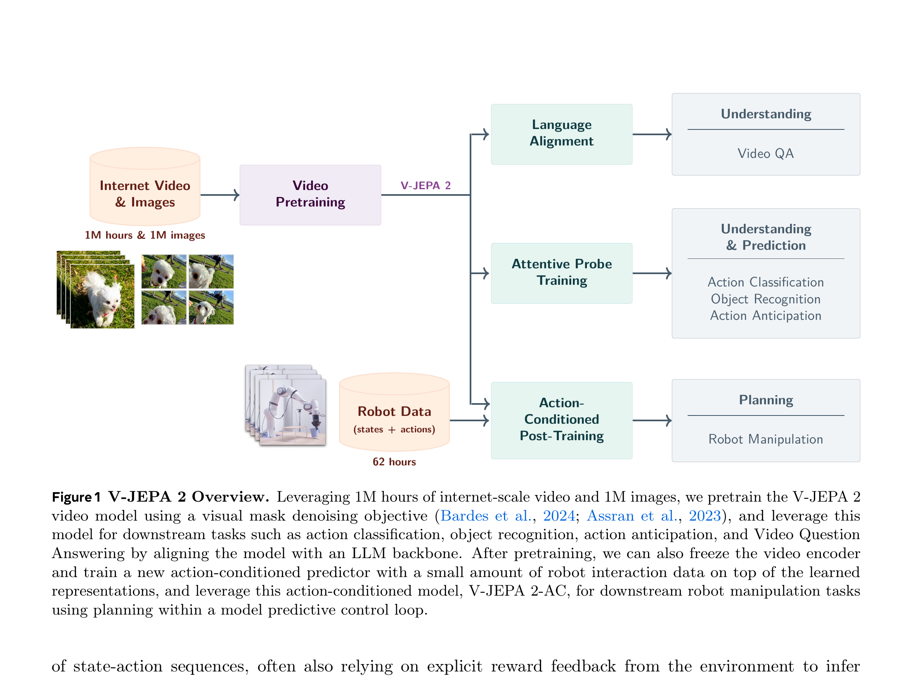
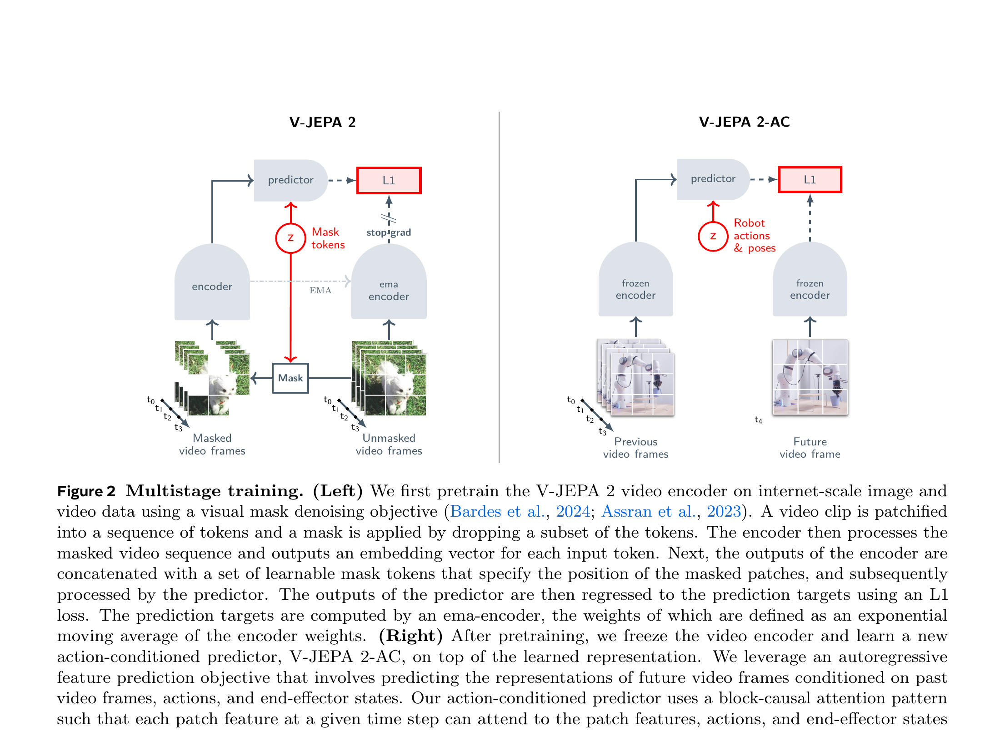

V-JEPA 2: Self-Supervised Video Models Enable Understanding, Prediction and Planning
Mahmoud Assran et al. · FAIR at Meta / Mila · arXiv:2506.09985 · 2025
主架构、MPC 公式、真机结果与局限已成；VQA、anticipation 与全部消融将在下一轮补齐。
§1 它跨过了 V-JEPA 最关键的门槛：动作进入预测器
V-JEPA 只证明 latent video prediction 能学强表征，却不能回答“做这个动作会怎样”。V-JEPA 2 用超过 100 万小时互联网视频先学 action-free 表征，再用 62 小时 DROID 机器人轨迹训练 action-conditioned predictor。于是同一个视觉状态空间既能做理解，也能被 MPC 拿来规划。

§2 两阶段训练：先学“世界状态”，再学“动作如何改变状态”
互联网视频没有 action，所以不能直接拟合 $p(z_{t+1}\mid z_t,a_t)$。论文把问题拆开：第一阶段学习稳定、通用的 $z$；第二阶段冻结 $z$ 的语义，只训练一个新的 predictor 学机器人动力学。这样 62 小时动作数据不用同时承担“学视觉”和“学控制”两件事。

- $x,y$
- 遮罩视频与干净视频。
- $\Delta_y$
- learnable mask token，编码目标位置。
- $E_{\bar\theta}$
- EMA target encoder；其输出停止反传。
- $L_1$
- 只在 masked patch 的 latent 上计算。
§3 Latent MPC：不生成视频，直接比较“想象状态”与“目标状态”
有了 action-conditioned predictor，规划就变成在动作序列上做搜索：把当前帧与目标图编码成 latent，让 predictor rollout 候选动作的未来 latent，选离目标最近的一条。论文用 Cross-Entropy Method 反复采样、筛 top-k、更新动作分布，并只执行第一步后重规划。
- $z_k$
- 当前相机帧的 latent。
- $s_k$
- 当前末端执行器状态。
- $\hat a_{1:T}$
- 待优化的动作序列。
- $P(\cdot)$
- V-JEPA 2-AC imagined rollout。
- $z_g$
- 目标图像 latent；距离越小，候选动作越好。
§4 证据：两间实验室零样本部署，但速度仍是瓶颈
模型在两台训练环境之外的 Franka 上执行 reach、grasp、pick-and-place。平均 reach 为 100%，杯子 pick-and-place 为 80%，盒子为 65%；关键对照是生成式 Cosmos 规划每个动作约 4 分钟，而 latent V-JEPA 2-AC 在更多候选样本下约 16 秒。它快很多，却仍远低于实时控制频率。
| Action data | <62 小时 DROID，无任务奖励。 |
| 部署 | 两间新实验室的 Franka，单目低分辨率 RGB，零样本。 |
| 优势 | latent rollout 比像素视频生成显著更快；物体交互成功率优于 Octo 与 Cosmos 基线。 |
| 代价 | CEM 每一步仍需秒级搜索，长程任务靠人工给子目标图。 |
§5 路线定位：它是 latent world model，不是生成式 WAM
它第一次把大规模 action-free 视频 JEPA 与少量机器人 interaction data 接起来，并在真实机器人上证明 latent-space planning 可行。
相机摆位敏感；单目下动作坐标轴可能不可辨；自回归 latent 长程误差累积；CEM 规划慢；长程 pick-and-place 依赖人工子目标；表征的 dense spatial detail 仍不足。这些问题分别被 V-JEPA 2.1、LeWorldModel 与实时 WAM 路线继续追。